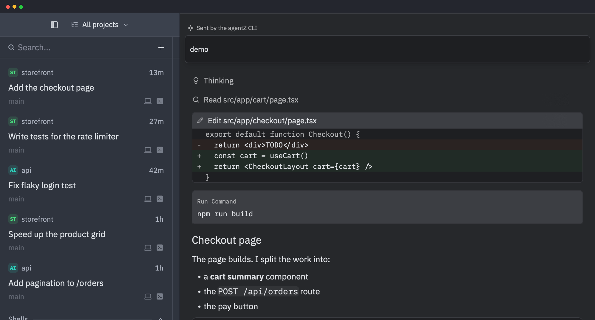

Coding agents on every machine,
in one Mac app.
agentZ runs Claude Code, Codex, Gemini, OpenCode and every other ACP agent side by side, across your projects, your Mac and your Linux servers, with real terminals next to them.
curl -fsSL https://ahrorbeksoft.github.io/agentZ/install.sh | sh
Run it in Terminal on a Mac to install the app, or on a Linux machine to install its server. Run it again to update.

What it does
Any ACP agent
Install agents from the ACP Registry in a click, or add your own command. Log in the way each agent offers.
Threads across projects
Every conversation is a thread in the sidebar, with its project, branch and status. Pin, search and archive them.
Your other machines
Add a Mac or a Linux server over SSH. agentZ installs its server there and offers each update.
Agents keep running
A background server on each machine owns the agents, so quitting the app or losing the connection doesn't stop them.
Worktrees and pastures
Give a thread its own git worktree, or an instant copy-on-write copy of the project, and bring the work back.
Real terminals
Terminals, split panes and workspaces beside the agents, and agent CLIs that run in a terminal.
Install
curl -fsSL https://ahrorbeksoft.github.io/agentZ/install.sh | sh
On a Mac (Apple silicon or Intel, macOS 10.15.7 or later), it installs agentZ.app in /Applications.
On Linux (x86_64 or arm64), it installs agentz-server, so you can add the machine from the app over SSH. The app also installs it on its own when you add a machine.
Prefer to download it yourself? Every build is on the
releases page, with SHA256SUMS.
The app isn't notarized by Apple, so a copy downloaded with a browser needs
xattr -dr com.apple.quarantine /Applications/agentZ.app before it opens.